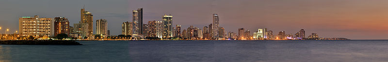

Cartagena, Colombia
About
Cartagena or Cartagena de Indias (Spanish pronunciation: [kartaˈxena ðe ˈindjas], "Cartagena of the Indies"), is a city on the northern coast of Colombia in the Caribbean Coast Region and capital of the Bolívar Department. The port city had a population of 892,545 as of the 2005 census. It is the fifth-largest city in Colombia and the second largest in the region, after Barranquilla. The Cartagena urban area is also the fifth-largest urban area in the country. Economic activities include maritime and petrochemicals industry, as well as tourism.

The city was founded on June 1, 1533, and named after Cartagena, Spain. However, settlement in this region around Cartagena Bay by various indigenous people dates back to 4000 BC. During the colonial period Cartagena served a key role in administration and expansion of the Spanish empire. It was a center of political and economic activity due to the presence of royalty and wealthy viceroys. Cartagena is the city most associated with pirates in the Caribbean, and the world. In 1984 Cartagena's colonial walled city and fortress were designated a UNESCO World Heritage Site.
Tourist Areas
Downtown
The Downtown area of Cartagena has varied architecture, mainly a colonial style, but republican and Italian style buildings, such as the Cathedral's bell tower, can be seen.
 The official entrance to downtown Puerta del Reloj (Clock Gate), which comes out onto Plaza de los Coches (Square of the Carriages). A few steps farther is the Plaza de la Aduana (Customs Square), next to the mayor's office. Nearby is San Pedro Claver Square and the church also named for Saint Peter Claver, where the body of the Jesuit saint ('Slave of the African slaves') is kept in a casket, as well as the Museum of Modern Art.
Nearby is the Plaza de Bolívar (Bolívar's Square) and the Palace of the Inquisition. Plaza de Bolívar (formerly known as Plaza de La Inquisicion) is essentially a small park with a statue of Simón Bolívar in the center. This plaza is surrounded by balconied colonial buildings. Shaded outdoor cafes line the street. The Office of Historical Archives devoted to Cartagena's history is not far away. Next to the archives is the Government Palace, the office building of the Governor of the Department of Bolivar. Across from the palace is the Cathedral of Cartagena, which dates back to the 16th century.
The official entrance to downtown Puerta del Reloj (Clock Gate), which comes out onto Plaza de los Coches (Square of the Carriages). A few steps farther is the Plaza de la Aduana (Customs Square), next to the mayor's office. Nearby is San Pedro Claver Square and the church also named for Saint Peter Claver, where the body of the Jesuit saint ('Slave of the African slaves') is kept in a casket, as well as the Museum of Modern Art.
Nearby is the Plaza de Bolívar (Bolívar's Square) and the Palace of the Inquisition. Plaza de Bolívar (formerly known as Plaza de La Inquisicion) is essentially a small park with a statue of Simón Bolívar in the center. This plaza is surrounded by balconied colonial buildings. Shaded outdoor cafes line the street. The Office of Historical Archives devoted to Cartagena's history is not far away. Next to the archives is the Government Palace, the office building of the Governor of the Department of Bolivar. Across from the palace is the Cathedral of Cartagena, which dates back to the 16th century.
Another religious building of significance is the restored Santo Domingo Church in front of Plaza Santo Domingo (Santo Domingo Square). In the square is the sculpture Mujer Reclinada ("Reclining Woman"), a gift from the renowned Colombian artist Fernando Botero. Nearby is the Tcherassi Hotel, a 250-year-old colonial mansion renovated by designer Silvia Tcherassi.
 In the city is the Augustinian Fathers Convent and the University of Cartagena. This university is a center of higher education opened to the public in the late 19th century. The Claustro de Santa Teresa (Saint Theresa Cloister), which has been remodeled and has become a hotel operated by Charleston Hotels. It has its own square, protected by the San Francisco Bastion.
In the city is the Augustinian Fathers Convent and the University of Cartagena. This university is a center of higher education opened to the public in the late 19th century. The Claustro de Santa Teresa (Saint Theresa Cloister), which has been remodeled and has become a hotel operated by Charleston Hotels. It has its own square, protected by the San Francisco Bastion.
A 20-minute walk from downtown is the Castillo de San Felipe de Barajas, located in el Pie de la Popa (another neighborhood), the greatest fortress ever built by the Spaniards in their colonies. The tunnels were all constructed in such a way as to make it possible to hear footsteps of an approaching enemy. Some of the tunnels are open for viewing today.
San Diego
San Diego was named after the local San Diego Convent, now known as the Beaux Arts School Building. In front of it is the Convent of the Nuns of the Order of Saint Clare, now the Hotel Santa Clara. In the surrounding area is Santo Toribio Church, the last church built in the Walled City. Next to it is Fernández de Madrid Square, honoring Cartagena's hero, José Fernández de Madrid, whose statue can be seen nearby.
Inside the Old City[clarification needed] is found Las Bóvedas (The Vaults), a construction attached to the walls of the Santa Catalina Fortress. From the top of this construction the Caribbean Sea is visible.
 Other areas of interest include:
Other areas of interest include:
- Steps of La Popa mount
- Castillo de San Felipe de Barajas
- The Walled city of Cartagena
- Cartagena Gold Museum
- Palace of the Inquisition
- Las Bóvedas
Climate
Cartagena features a tropical wet and dry climate. Humidity averages around 90%, with rainy seasons typically in May–June and October–November. The climate tends to be hot and windy. Strong cool winds occur from November through February.
Cartagena is rarely touched by hurricanes. Although the city is in the Caribbean, the mainland is quite far south, isolating it from the wind currents that feed the hurricanes.
| Data for: | Year |
|---|---|
| Record High | 104 °F |
| Average High | 88.68 °F |
| Average Low | 75.52 °F |
| Record Low | 64.4 °F |
| Daily Mean | 81.89°F |
| Precipitation (inch) | 35.92 |